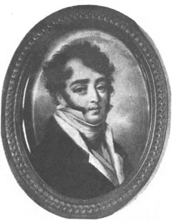

Срок отпуска приходил к концу, а между тем Батюшков все не получал увольнения от службы. Поэтому, чтобы выяснить, наконец, свое положение, он решил ехать к Н. А. Бахметеву в Каменец-Подольск, где находилась его штаб-квартира, и в июле 1815 г. был уже на месте. Здесь сильно тяготило его отсутствие людей, с которыми он мог бы чувствовать себя по душе; только в обществе любезного и просвещенного графа К. Ф. Сен-При, подольского губернатора, Батюшков с удовольствием проводил время и пользовался его библиотекой.
В Одессе Батюшков поселился у знакомого ему по Каменцу графа К. Ф. Сен-При, теперь херсонского губернатора; граф принял нашего поэта очень радушно, старался всячески развлекать его, и Батюшков, действительно, чувствовал себя превосходно.
«Здесь гроза для министров в народе продолжается. [...] Везде толпы требуют от короля их смерти. Вчера бродила многочисленная толпа с трехцв<етным> знам[енем] по улицам, крича: смерть министрам! вошла после обеда в Palais R[oyal] на двор к королю: там пели Marseillaise и пр[очее] и требовали смерти министрам; но немедленно вышел караул нац<иональной> гвардии, пробили la retraite (отступление) и выслали из двора всех и заперли ворота. Я видел уже в одних галереях и двор пустой! Другая толпа, в две тысячи и более, кричала то же у Люксембурга, а ночью на моей улице кричали то же, так что я проснулся. Сейчас брадобрей мой сказывал мне, что кричали вчера : mort aux ministres ou la tête du Roi! ( Смерть министрам или смерть королю!) Я встретил пера Сен-При, который третьего дня говорил с королем, сказавшим ему: "Je ferai mon devoir" ( Я исполню свой долг). Перы также не хотят быть робкими, и S[ain]t-Priest думает, что им нельзя отказываться от суда и видит для себя и для товарищей опасность, но не страшится ее. Он думает, что непопулярность их происходит между прочим и оттого, что при прежних королях рассуждения их не были публичны (В отличие от палаты депутатов, на заседания которой в эпоху Реставрации допускалась публика, палата пэров заседала без посторонних.), что народ только через несколько дней узнавал, что у них происходило и не мог отдавать им справедливости за их патриотические акты, что в провинциях дворяне не любили их из зависти…
(Письмо от 19 октября 1830 г.).
В одном из городов Италии, ради какого-то ночного беспорядка сделано было полициею распоряжение, чтобы позднее известного часа никто не выходил на улицу иначе, как с зажженным фонарем, Находящийся тогда в том городе наш молодой Сен~При, отличный каррикатурист, котораго карандаш воспет Пушкиным в Онегине, росписал свой фонарь забавными, но схожими изображенияки городских властей. Само-собою разумеется, что он с фонарем своим прогуливался по всем улицам наиболее людным.
Этот молодой человек, веселый и затейливый проказник, вскоре затем, в той же Италии, застрелил себя неизвестно по какой причине, помнится, ночью на Светлое Воскресение. Утром нашли труп его на полу, плавающий в крови. Верная собака его облизывала рану его. Он был сын графа Сен-При, Французского эмигранта, брат которого с честью вписал свое Французское имя в летописи Русского войска в ряду лучших генералов наших. Мать его, урожденная княжна Голицына, была родная сестра графини Толстой и графини Остерман. Отец, вероятно при герцоге де Ришеле, был губернатором в южной России; он был человек образованный, уважаемый и любимый в Русском обществе. Он довольно свободно и правильно говорил по-русски. Он в России принадлежал административной школе герцога де Ришелье, бывшего долгое время Новороссийским генерал-губернаторам; Одесса в особенности много была обязана ему процветанием своим. Эта школа, хотя и под Французскою фирмою, оставила по себе в России хорошие и не совсем бесплодные следы.
Другой сын бывшего Подольского губернатора, граф Алексей, принадлежал более Франции, нежели России, хотя но матери был он полу-русский уроженец. Природа и судьба как будто хотели означить это происхождение: он родился в Петербурге 1805, а умер в Москве 1851 года. Он был пером Франции, в царствование Филиппа, и членом Французской Академии. Служебная деятельность его развилась преимущественно на дипломатическом поприще, на котором занимал он посланнические должности в Бразилии, Португалии, Дании. Сверх того, известен он многими историческими и политическими сочинениями, заслуживающими внимания и уважения читателей. В нашей литературе стоит упомянуть о нем, по содействию его во Французском драматическом сборнике, появившемся в Париже под названием: Иностранный Театр. В этом сборнике напечатан перевод, им сделанный, одного или двух русских драматических произведений. Сестра его была замужем за князем В. А. Долгоруковым. Она известна была в Петербургском обществе умом своим и приветливым, хотя несколько странным и отличающимся независимостью характером.
Молодой и несчастный Сен-При, с которого начали мы речь свою, добыл себе место в нашей общественной летописи по своим остроумным карикатурам. Замечательно, что талант его по живописи или рисовке был в нем некоторого рода наследственный: брат матери его, известный под именем князя Егора (Голицына), также в конце минувшего и начале нынешнего столетия, славился своими забавными и удачными карикатурами. В молодую пору сердечных похождений своих Карамзин встретил в нем счастливаго соперника. Не смотря на свою безобидчивость и свое мягкосердечие, Карамзин, в одной из своих повестей, отплатил ему за это некоторыми штрихами и своего карандаша.

Неизвестный художник. Портрет князя Егора Алексеевича Голицына. 1-я четв. XIX в. Миниатюра с оригинала А.Молинари. ГРМ.
(Москва еще с екатерининского времени была пристанищем опальных вельмож, живших в ней в зависимости от своих средств и вкусов, уже не регламентируемых придворным этикетом. Окунувшись в шумную толпу московских жителей, Егор Голицын приобрел себе среди них известность своими удачными карикатурами на ряд достаточно высоких особ. Аннотация к его портрету работы знаменитого Александра Молинари, впервые опубликованному в 1908 году, в числе других уже известных читателю сведений любезно сообщает: "парижское воспитание дало ему прекрасное знание французского языка, но совершенно испортило его, сделав развратным человеком и игроком, и довело до преждевременной смерти".)
Мы остановились на семействе Сен-При, потому что нам приятно связать некоторые наши родные и общественные предания с преданиями иноплеменными. Но многие хотели бы поставить Русского каким-то особняком, каким-то образцовым, пробным членом (specimen) в Европейской семье, на удивление и поклонение человечеству и потомству. Они мысленно и всеми желаниями сердца ограждают себя от чуждого прикосновения и поветрия, если не совсем стеною желтой столицы, то по крайней мере Кремлевскою стеною Московского Китай-города, Мы, напротив, любим отыскивать в стенах ворота, через которые, но с узаконенным видом, есть свободный пропуск из города и в город, на основании порубежных порядков. Мы и сами рады в гости ходить, да рады и гостям.
Петр Вяземский. Старая записная книжка
Счастлив ты в прелестных дурах,
В службе, в картах и в пирах;
Ты St.-Priest в карикатурах,
Ты Нелединский в стихах;
Ты прострелен на дуэле,
Ты разрублен на войне, —
Хоть герой ты в самом деле,
Но повеса ты вполне.
Saint-P[riest] — имеется в виду граф Эммануил Сен-При (1806–1828), считавшийся талантливым карикатуристом. Кажется, ни один из его рисунков никогда не публиковался. Он был сыном французского эмигранта Армана Шарля Эммануэля де Гиньяра, графа де Сен-При, женившегося на русской княжне Софье Голицыной.
Этот молодой художник застрелился, согласно одной версии, в пасхальное воскресенье в церкви в Италии, согласно другой, — в присутствии некоего эксцентричного англичанина, пообещавшего оплатить его карточные долги при условии, что будет свидетелем его самоубийства.